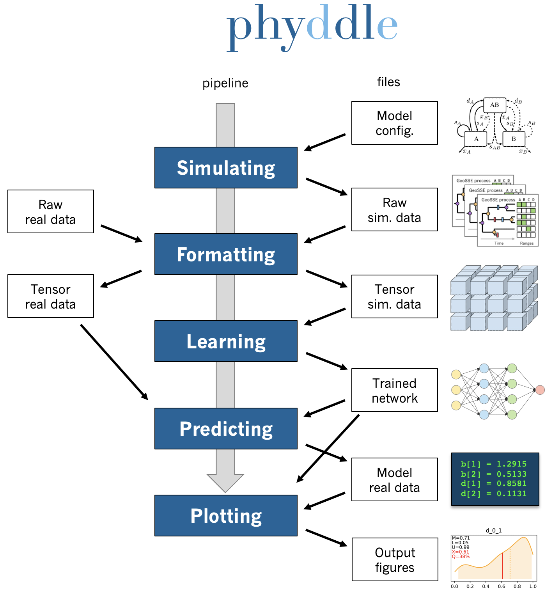

phyddle documentation
phyddle is a pipeline-based toolkit for fiddling around with phylogenetic models and deep learning. phyddle can be installed as a Python package using pip and used for pipeline analyses using scripts provided through GitHub.
Note
This private beta version of phyddle is still under development. It is generally tested and stable with respect to a few use standard cases. Much of the documentation and some key features are still missing. Most phyddle development occurs on a 16-core Intel Macbook Pro laptop and a 64-core Ubuntu server, so there are also unknown portability/scalability issues to correct. Any feedback is appreciated! michael.landis@wustl.edu
Overview
A standard phyddle analysis performs the following tasks for you:
{kind=link}
Pipeline configuration applies analysis settings provided through a config file and/or command line arguments.
Model configuration constructs a base simulating model to be Simulated (states, events, rates).
Simulating simulates a large training dataset under the model to be Formatted (parallelized, partly compressed).
Formatting encodes the raw simulated data into tensor format for Learning (parallelized, compressed).
Learning shuffles and splits training data, builds a network, then trains and saves the network with the data for Prediction.
Predicting estimates model parameters for a new dataset with the trained network.
Plotting generates figures that summarize the training data (Formatting), the network and its training (Learning), and any new predictions (Predicting).
Features
phyddle currently supports offers the following features:
trained network generates parameter estimates and calibrated prediction intervals (CPIs) for input datasets
parallelized simulating, formatting, and learning
simulation integrates with user-provided scripts (e.g. R) and third-party simulators (e.g. MASTER in BEAST)
modeling interface for MASTER allows several state-dependent birth-death model types and variants (more to come)
encoding of phylogenetic-state tensor from serial and extant-only input with multiple states (CBLV+S and CDV+S extensions)
encoding of auxiliary data tensor from automatically computed summary statistics and “known” parameter (e.g. sampling rate)
HDF5 with gzip compression for tensor data
shuffles and splits input tensors into training, test, validation, and calibration datasets for supervised learning
builds network with convolution, pooling, and dense layers that match input tensors
trains network and saves history
automatic figure generation with Matplotlib